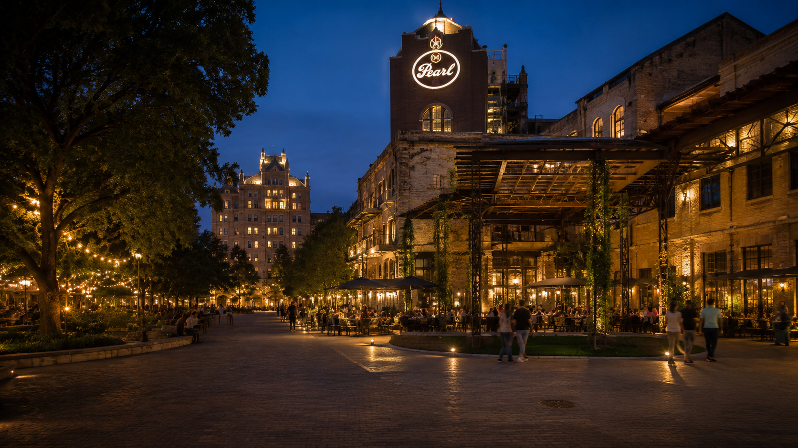

Bohanan’s Prime Steaks and Seafood
Google: 4.7 ★ · 3.1K reviewsBest polished dinner. Old-world steakhouse near the Majestic.
Built by The AI Plug
Where To Eat
River Walk dinners, Pearl nights, resort-area meals, steakhouses, Mexican, seafood, rooftops, late-night stops, and family-friendly backups — organized by where you are and what kind of night you want.
Food mood · Quick pick
Tap the night you are planning. We point you to the right area first, then a short list of strong tables — not a citywide directory.
 Hosting
Hosting
Client meals, convention travelers, and polished reservations downtown or north-side.
Steakhouse picks River Walk
River Walk
Scenery, walkability, and a confident downtown dinner without treating every tourist name like a top pick.
Downtown & River Walk
The PearlPolished food, cocktails, live music, and a less touristy feel than the busiest River Walk stretch.
Pearl district Resort
Resort
JW, La Cantera, Hyatt Hill Country — stay close, short ride, or downtown / Pearl. Flight-day timing when you need it.
See nearby food picks Flavor
Flavor
Local culture, patio energy, and strong flavor beyond generic tourist picks.
Mexican picks Splurge
Splurge
Anniversaries, executive hosting, and nights when the restaurant is the memory.
Celebration dinners Coastal
Coastal
Citrus-forward seafood and Willie Approved share plates when the table wants spice.
Seafood picks Golden hour
Golden hour
Rooftop bars, lounges, and speakeasies when the night is about the view, the cocktail, or the final stop after dinner.
Golden hour picksWalkable core
Use these when the group wants a walkable downtown night, a polished dinner near the River Walk, or one strong San Antonio meal before heading back.
Best polished dinner. Old-world steakhouse near the Majestic.
Best foodie dinner. Creative Texas fine dining above the river.
Best River Walk classic. Tableside guacamole and water-side dinner energy.
Best convention dinner. Reliable Italian landmark on the River Walk.
Best modern Mexican. Stylish patio and brunch on a calmer stretch.
Best BBQ downtown. Real Texas brisket without leaving the core.
Best culture stop. Market Square, bakery, mariachis, late-night energy.
Best historic bar. Serious cocktails and better food than most expect.
Best historic lunch. Daytime stop, not a big night-out dinner.
Historic River Walk photo patio — not our strongest food-first recommendation.
Pearl District
Use Pearl when the group wants a polished local-feeling district with better walk-and-eat pacing than the busiest River Walk stretch.
Best Pearl lounge. Luxury cocktails and Hotel Emma room energy — the drinks move when dinner is already set nearby.
Best live music night. Underground jazz club for date nights and grown-up nights out.
Best Hotel Emma dinner. Polished modern American when the night should feel upscale but easy to read.
Best Pearl landmark. Groups, beer, Southern and coastal comfort without leaving the district.
Best mixed appetites. Market-style dining when everyone wants something different in one stop.
Best foodie experience. Prix fixe and culinary-school energy for food-forward visitors.
Best meat-forward group dinner. Steaks, wine, and industrial Pearl atmosphere.
Best relaxed cocktails. Easy happy-hour and nightcap energy without the full lounge dress-up.
Best casual group food. Families and mixed tastes when you want fast, flexible Pearl dining.
Plan a Pearl night: Dinner at Supper, Southerleigh, Boiler House, or Savor — drinks at Sternewirth or Blue Box — live music at Jazz, TX — food hall or market at Pullman or Bottling Department. Walk Museum Reach before or after when the weather cooperates.
Resort areas
Match dinner to where you are staying first — on-property when the crew is tired, nearby when you want easy, Stone Oak or downtown only when the meal is worth the drive.
Michelin-polished resort dining, Texas comfort, steakhouse power tables, and family-friendly Rim options without downtown traffic.
Start on-property for convenience. Upgrade to Stone Oak for J-Prime, Chama Gaúcha, and stronger premium dinners.
On-property
Nearby Stone Oak upgrades
On-property polish, poolside ease, and west-side backups when the group should not drive downtown.
On-property
Nearby
Owner picks
When the meal should be the memory — or you want one table locals trust without building a list. Willie Approved means Willie has been there and backs it.
Rodizio, steak, Mexican flavor, rooftop finish, and seafood — curated splurges and Willie picks, not every famous name in town.
Willie’s top rodizio pick — best matched to La Cantera resort guests. Chama Gaúcha is the stronger Stone Oak / JW-area rodizio backup.
Best for: La Cantera nights, hungry groups, celebration tables.
The familiar rodizio powerhouse — great when the table wants abundance, celebration energy, and a room that never feels empty.
Best for: group dinners, business crews, steak-heavy nights, celebration tables.
Reservation move: Book for the full crew size — rodizio dinners need the right table count.
North-side steakhouse polish when the night needs to feel expensive and confident — a strong client-dinner move away from downtown traffic.
Best for: client dinners that need a wow room, north-side stays, steak-first nights.
Reservation move: Splurge nights — book early for prime-time weekend tables.
The downtown steak-and-seafood room when you need classic hosting polish and a walkable finish after the meal.
Best for: executive dinners, walkable downtown stays, classic premium nights.
Reservation move: Business nights — reserve before you promise the client.
Willie Approved for a polished downtown dinner near the river — modern San Antonio energy without feeling like a tourist trap.
Best for: downtown stays, first-night dinners, convention crowds, confident walk-off-the-hotel nights.
Willie’s go-to when the table wants ceviche heat and shareable seafood instead of another steak night.
Best for: seafood cravings, shareable tables, travelers tired of steak lists.
Visitor move: When the meal needs bright citrus heat and shareable seafood plates.
Quick guide: Brasão for La Cantera rodizio, Chama for Stone Oak / JW-area rodizio, J-Prime or Bohanan’s for steak gravity, Domingo for downtown Mexican-adjacent polish, Aleteo or Fairmount for skyline finish, El Bucanero when the table wants ceviche heat.
Flavor
Domingo for polished downtown, La Fonda and Rosario’s for classic rooms, Soluna for Willie’s flavor pick, La Fogata for patio nights north of the core.
Highest-review downtown option first, then classic rooms and personal favorites labeled on their own terms.
Willie Approved for polished Mexican-adjacent dining downtown — a strong first-night or convention-adjacent table near the river.
Best for: downtown and River Walk plans, convention guests, visitors staying in the urban core.
Classic San Antonio Mexican room with strong rating balance, tradition, and visitor confidence.
Best for: first-city dinners, family tables, polished local feel.
Reservation move: Weekend prime — book before you add River Walk walks.
Willie’s personal Mexican favorite — ribeye tacos, chispas, and neighborly energy when you want a local room, not a postcard.
Best for: dinners when you want Willie’s flavor shorthand, casual date nights, travelers asking for a named local room.
Big San Antonio personality in a festive dining room — great when the night should feel loud, colorful, and full.
Best for: groups, King William and Southtown evenings, celebrations that want crowds and color.
Classic patio energy and traditional San Antonio feel — Willie’s north-side patio pick when you want garden lights and shareable classics outside the downtown core.
Best for: patio-first dinners, visitors chasing garden lights and shareable classics.
Quick guide: Domingo when you want polished downtown Mexican-adjacent energy on the River Walk orbit, La Fonda and Rosario’s for classic San Antonio rooms, Soluna for Willie’s personal flavor pick, La Fogata when the night is patio-first outside the core.
Prime cuts
Use this when the restaurant is the memory. Bohanan’s downtown, J-Prime Stone Oak, Perry’s La Cantera, 18 Oaks, Antlers Lodge, Signature, and Brazilian rodizio group nights at Brasão or Chama Gaúcha.

Match the night: north-side polish, downtown classic, or a brand the group already knows.
North-side splurge steak when the night needs confidence and a modern premium room.
Best for: client splurges, resort-area business dinners, steak-forward groups.
Reservation move: Book peak weekend slots early.
The downtown classic when the table needs etiquette, polish, and walkable post-dinner moves.
Best for: executive hosting, conference-adjacent stays, formal downtown nights.
Classic steakhouse for resort-area business dinners without downtown traffic.
Best for: La Cantera guests, client tables, celebration steaks.
On-property luxury steak when the group should stay at the resort.
Best for: tired crews, golf days, resort splurges.
Reliable fallback when travelers want a recognizable steakhouse format and predictable timing.
Best for: conservative diners, backup plans, name comfort on the road.
Good when: The group wants the steakhouse script they already know.
Quick guide: Bohanan’s downtown, J-Prime Stone Oak, Perry’s La Cantera, 18 Oaks at JW. Ruth’s Chris only when the group wants a familiar brand name.
Rodizio
Brasão is Willie’s rodizio pick near La Cantera. Chama Gaúcha is the big-room backup for Stone Oak / JW-area guests. Fogo when the group wants a national brand they already know.
Brasão for La Cantera rodizio. Chama Gaúcha when the group is near JW / Stone Oak and wants the biggest, busiest rodizio room.
Willie’s top rodizio pick — La Cantera-area splurge. Use Chama for Stone Oak / JW resort-area rodizio nights.
Best for: La Cantera resort nights, hungry groups, memorable tables.
The big-room rodizio move when the table wants abundance and a familiar celebration feel.
Best for: group dinners, business crews, steak-heavy nights, celebration tables.
The familiar national-brand backup when the group wants predictable rodizio and easy consensus.
Best for: mixed comfort levels, convention plans, brand-familiar travelers.
Quick guide: Brasão for La Cantera, Chama for Stone Oak / JW-area rodizio, Fogo for a familiar national brand.
Gulf & lime
El Bucanero for Willie’s top ceviche move. Leche de Tigre for a more refined Peruvian night. El Cevichero for casual citrus-seafood at a lighter price.
Start with El Bucanero, then pick Peruvian finesse or easygoing cantina seafood.
Willie’s top ceviche pick — bold flavor when the table is tired of playing it safe.
Best for: spice-forward dinners, adventurous visitors, ceviche-first nights.
Peruvian-focused ceviche and marine dishes when you want a more styled room than a cantina night.
Best for: date-night seafood, tighter groups, refined ceviche nights.
Willie’s second-best ceviche pick here — smaller review count than El Bucanero, still a strong citrus-seafood room when you want cantina energy without a steakhouse bill.
Best for: lunch pivots, smaller groups, casual seafood cravings.
Quick guide: El Bucanero first, Leche de Tigre for a refined night, El Cevichero for lighter spend.
Morning
La Panadería for bakery mornings, Alamo Biscuit near the River Walk, Mi Tierra for Market Square culture and late-night stamina.

Bakery discipline, big plates, or cultural square energy — pick the reset your day needs.
Visitor-friendly bakery momentum with numbers that back the recommendation.
Best for: family mornings, lighter starts, pastry-led plans.
Hearty breakfast near the river when the crew needs real portions before a long walk day.
Best for: sightseeing fuel-ups, bigger appetites, River Walk mornings.
Market Square icon — as much about the experience as the plate. Use when story and scale matter.
Best for: Market Square visits, late-night resets, first-timer San Antonio photos.
Quick guide: La Panadería for pastries, Alamo Biscuit for River Walk mornings, Mi Tierra for Market Square nights.
Downtown night-out
Use this lane when dinner is part of the downtown plan. Pick the food first, then add the rooftop, River Walk stroll, bar, lounge, or ride back. Full activity context lives on Downtown.

Match barbecue, steakhouse, River Walk, Mexican culture, or skyline view to your group — then layer drinks without zig-zagging across downtown.
Best downtown dinner: Bohanan’s, Paesanos, Biga, Domingo by mood.
Best casual: Pinkerton’s, Schilo’s, Mi Tierra; Casa Rio when you want the classic umbrella photo stop.
Best rooftop: Aleteo, Moon’s Daughter, Fairmount, Rosario’s.
A downtown barbecue win for visitors who want real Texas brisket, ribs, sausage, and casual group energy without leaving the central city.
Best for: out-of-state visitors craving Texas brisket, casual group lunches, families, convention visitors wanting barbecue nearby.
Reservation move: Skip the basic side order and consider the duck and sausage jambalaya or jalapeño cheese sausage if the group wants something memorable.
The downtown luxury steakhouse move when the night needs to feel important — a deliberate downtown destination, not a nearby resort pick.
Best for: corporate executive hosting, premium date nights, theater-adjacent luxury dining, polished steakhouse dinners.
Reservation move: Arrive early for a cocktail at the downstairs bar before heading upstairs for dinner.
Polished River Walk fine dining for elevated food, wine, and a scenic river setting away from the loudest tourist stretch.
Best for: foodies, fine wine, scenic business dinners, upscale River Walk nights.
Reservation move: Request a river-view or terrace-side table around sunset if available.
River Walk classic for Italian-leaning dinners — ranks above 1Watson when the table and walkable River Walk location both matter.
Best for: convention attendees, upscale family gatherings, scenic date nights, useful River Walk dinners.
Reservation move: First-timers should consider the signature Shrimp Paesano.
San Antonio culture classic with lights, murals, bakery cases, mariachi energy, and big family-friendly atmosphere.
Best for: families, out-of-town guests, cultural experience, late-night dining, Market Square visits.
Reservation move: Even if the restaurant line is long, stop at the panadería counter for pastries or pralines to go.
Stylish modern Mexican along the River Walk for brunch, dates, and group dinners without old-school Tex-Mex heaviness.
Best for: scenic brunch, date nights, modern group dinners, River Walk dining without going too heavy.
Reservation move: Ask about lower river-level patio seating under the canopy lights when weather works.
Classic River Walk dinner with tableside guacamole, prickly pear margaritas, and strong San Antonio energy.
Best for: introducing out-of-towners to the River Walk, casual business dinners, lively outdoor dining.
Reservation move: Request outdoor patio seating on the river when available.
Classic River Walk photo stop and easy casual meal on the iconic umbrella patios — better for the experience than a top food-first pick.
Best for: first-time photo stops, families wanting the classic patio look, easy casual River Walk nights.
Reservation move: Request an outdoor table by the water for the full patio experience.
Historic daytime lunch stop for German-Texan comfort food, sandwiches, split pea soup, and homemade root beer.
Best for: fast casual lunch, history lovers, daytime River Walk breaks, old-school local flavor.
Reservation move: Pair lunch with their homemade root beer.
Moody historic bar and gastropub with strong cocktails, quality food, and one of the best downtown after-dinner moves.
Best for: late-night craft cocktails, post-convention unwinding, casual dinner plus drinks.
Reservation move: Try for the small back balcony overlooking the River Walk if available.
View-first dinner at the top of the Tower — best when skyline drama matters more than chasing the highest-rated food-first table.
Best for: milestone anniversaries, out-of-towners, families wanting a dramatic view, skyline-focused dinners.
Reservation move: Book around sunset if the view is the main event.
Pick the rooftop after dinner, or make it the main stop when skyline energy beats a long food crawl.
A newer luxury rooftop-style option near Hemisfair. Keep it as a premium new option unless venue-specific reviews are verified.
Best for: premium skyline views, resort escape nights, modern rooftop energy.
Insider tip: Cocktail program leans mezcal, tequila, citrus, and open-air lounge energy.
Rooftop seafood and cocktails with oysters, champagne, martinis, and downtown views from the Fairmount Hotel.
Best for: romantic date nights, luxury cocktail hours, seafood fans.
Insider tip: Pair oysters or seafood platters with champagne or a martini.
Lively rooftop for margaritas, music, and skyline views — main-venue rating unless rooftop-specific listing exists.
Best for: lively group nights, bachelorette parties, strong margaritas, music and skyline energy.
Insider tip: Try outdoor lounge seating near dusk if available.
After-dinner moves when the group wants cocktails, a darker room, or one last memorable stop.
High-end rooftop lounge with skyline views, Mediterranean small plates, and a fashionable night-out feel.
Best for: upscale nightlife, corporate travelers, fashion-forward groups, skyline cocktails.
Insider tip: Dress smart-casual and consider reservations for outdoor seating on weekends.
Hidden river-level cocktail escape beneath The Esquire — intimate drinks over loud bar-hopping.
Best for: cocktail lovers, couples, post-convention nightcaps, moody hidden-room energy.
Insider tip: Look for the stairs inside Esquire or the subtle river-level entrance.
Historic hotel lounge tied to the Robert Johnson recording story — slower drinks and classic cocktails.
Best for: history and music fans, hotel guests, relaxed corporate drinks.
Insider tip: Order a classic Old Fashioned or Manhattan for the room’s old-school feel.
Quick guide: Luxury steakhouse → Bohanan’s. River Walk Italian → Paesanos. Modern Mexican → Domingo. Barbecue → Pinkerton’s. Skyline dinner → Chart House or Aleteo. After-dinner → Esquire, Downstairs at Esquire, or Bar 414.
Walkable core
Use these when the group wants a walkable downtown night, a polished dinner near the River Walk, or one strong San Antonio meal before heading back.
Match steakhouse polish, River Walk classics, modern Mexican, barbecue, or culture stops to what kind of night you want — then add drinks in Golden hour or Pearl when the group still has energy.
Old-world steakhouse polish near the Majestic. Use when the night needs to feel special and the group wants the strongest downtown steak pick.
Best for: executive dinners, premium date nights, theater nights, serious steakhouse energy.
Creative Texas fine dining above the river, with a calmer waterfront feel than the busiest River Walk stretch.
Best for: foodies, scenic business dinners, elevated River Walk dinner without the tourist crush.
One of the easiest River Walk wins when visitors want the classic water-side dinner without overthinking it.
Best for: first-time visitors, River Walk atmosphere, tableside guacamole, lively outdoor dinner.
A reliable River Walk Italian landmark when the group wants polished, familiar, and walkable.
Best for: convention dinners, family groups, scenic patio, Shrimp Paesano.
Bright modern Mexican on a calmer stretch of the River Walk, good for brunch, drinks, and stylish group dinners.
Best for: brunch, modern Mexican, stylish patio, hotel-adjacent plans.
A downtown barbecue win when visitors want Texas brisket without leaving the core.
Best for: out-of-state visitors, brisket, casual groups, real Texas BBQ downtown.
Use this when the meal is also the cultural stop — lights, bakery, mariachis, Market Square, and late-night San Antonio energy.
Best for: families, culture stop, late-night, pan dulce, Market Square energy.
Historic downtown bar energy with serious cocktails and better food than most visitors expect.
Best for: cocktails, late-night bites, moody historic bar, post-convention unwind.
San Antonio’s oldest restaurant. Best as a daytime historic lunch stop, not a big night-out dinner.
Best for: daytime lunch, history lovers, quick casual stop, homemade root beer.
Quick guide: Steakhouse polish → Bohanan’s. Foodie dinner → Biga. River Walk classic → Boudro’s or Paesanos. Modern Mexican → Domingo. BBQ → Pinkerton’s. Culture night → Mi Tierra. Add Golden hour drinks after dinner when the group still has energy.
Chart House at Tower of the Americas (Google: 3.9 ★ · 5.5K reviews) — view-first skyline dinner when the rotating view matters more than chasing the highest-rated kitchen. Casa Rio (Google: 4.1 ★ · 4.8K reviews) — historic River Walk photo patio, not our strongest food-first recommendation.
Golden hour
Use these when the night is more about the view, the cocktail, the room, or the final stop after dinner.
Tenfold or another rooftop first when skyline energy is the plan, then a hidden speakeasy or historic lounge for the nightcap — add Pearl at Sternewirth or Jazz, TX when the group goes north of downtown.
Open-terrace skyline drinks with mezcal, tequila, and small plates — the strongest Google-rated downtown rooftop when the view and cocktail room are the main event.
Best for: sunset skyline drinks, post-dinner finishes, hotel guests nearby, DJ energy on busy nights.
A darker, hidden-feeling cocktail stop below the Esquire. Best when the group wants a nightcap without the loud tourist stretch.
Best for: cocktail people, couples, hidden nightcap, moody River Walk escape.
A newer luxury rooftop-style option near Hemisfair. Keep it as a premium new option unless venue-specific reviews are verified.
Best for: premium skyline views, resort escape nights, modern rooftop energy.
A polished rooftop seafood-and-cocktail move near Hemisfair, especially strong for couples and sunset drinks.
Best for: date nights, seafood, champagne, open-air downtown views.
A high-end rooftop lounge with indoor-outdoor skyline energy. Best when the group wants to dress up and make the night feel elevated.
Best for: resort guests, upscale nightlife, skyline views, stylish groups.
A historic hotel cocktail lounge with a real San Antonio music story. Best for visitors who like moody rooms and classic drinks.
Best for: blues history, classic cocktails, relaxed corporate drinks.
Louder, brighter, and more energetic. Use when the group wants music, margaritas, and a livelier rooftop scene.
Best for: energetic groups, margaritas, skyline, bachelorette-style nights.
Quick guide: Skyline-first → Tenfold. Dress-up skyline → Moon’s Daughter. Date-night sunset → Fairmount. Lively group night → Rosario’s. Hidden nightcap → Downstairs at Esquire. Classic hotel lounge → Bar 414. Add Pearl drinks at Sternewirth or Jazz, TX when the night stays north of downtown.
When downtown rooftops are full or the group already committed to Pearl, start with Sternewirth for lounge polish or Jazz, TX for live music — see Pearl district picks.
Pearl District
Use Pearl when the group wants a polished local-feeling district with better walk-and-eat pacing than the busiest River Walk stretch. See Pearl overview for the full decision path.
Dinner at Supper or Southerleigh, drinks at Sternewirth, live music at Jazz, TX, or food hall wins at Pullman or Bottling Department — walk Museum Reach before or after when the weather cooperates.
Emma-corner lounge polish — the Pearl drinks move when dinner is already set nearby.
Best for: luxury lounge, Hotel Emma, cocktails, impressive room.
Underground jazz club energy when the Pearl night needs a memorable finish after dinner.
Best for: live music, date night, grown-up night out.
Polished modern American when the group wants an upscale Pearl dinner without overthinking the menu.
Best for: polished Hotel Emma dinner, date nights, business meals.
Real Pearl energy with review depth — practical for groups, beer-friendly dinners, and nights that still feel premium.
Best for: Pearl landmark, groups, beer, Southern and coastal comfort.
Market-style dining when everyone wants something different without splitting the party.
Best for: mixed appetites, food hall exploration, flexible groups.
CIA student-run open kitchen when the table wants a food-forward Pearl experience with real cooking theater.
Best for: foodie prix fixe, culinary school experience, special dinners.
Meat-forward Pearl dinner with wine and industrial district atmosphere when the group wants a substantial table.
Best for: meat-forward groups, wine lovers, brunch and dinner.
Easy Pearl cocktails and happy-hour energy without the full Sternewirth dress-up.
Best for: relaxed cocktails, happy hour, local-feeling Pearl drinks.
Fast, flexible Pearl dining when mixed tastes and kids need one walkable stop.
Best for: casual group food, families, mixed appetites.
Plan a Pearl night: Dinner at Supper, Southerleigh, Boiler House, or Savor — drinks at Sternewirth or Blue Box — live music at Jazz, TX — food hall at Pullman or Bottling Department. Weekend mornings: Pearl Farmers Market.
Brasserie Mon Chou Chou (Google: 4.6 ★ · 1.5K reviews) — Willie Approved French brasserie when the group wants polished European dinner energy. Full district context on Downtown.
Easy tables
Practical picks when kids, mixed appetites, or tired crews need a calm dinner without overthinking the city.

Food halls, pizza, predictable group rooms, and quick BBQ backups when everyone needs to eat without a long debate.
Family pizza after shopping or Six Flags when the group wants an easy win near The Rim.
Large groups, sports energy, and a menu wide enough for picky eaters.
Eclectic family and group crowd-pleaser when you want a predictable menu near JW access.
Better family pizza near Hyatt when the crew wants Detroit-style without a long drive.
Pearl food hall when mixed tastes need one walkable stop.
Upscale food hall and market energy for food-forward groups with mixed appetites.
Family plus culture plus bakery when the night should feel like San Antonio.
Daytime historic lunch stop for families and history lovers downtown.
Quick Texas BBQ backup near JW when the group wants brisket without overthinking it.
Fast Texas BBQ for big groups west of downtown and near Hyatt-area resorts.
Quick guide: Rim pizza → Grimaldi’s. Big groups → Yard House or 54th Street. Pearl mixed tastes → Bottling Department or Pullman. Culture night → Mi Tierra. Quick BBQ → Smokey Mo’s near JW or Rudy’s near Hyatt.
After hours
Late nights need one smart backup, not a wishlist. Lock in the food first, keep one drink nearby, and only add a rooftop if the group still has real energy left.
Market Square institution with cultural weight and late-friendly hours — the cleanest sit-down reset when the night runs long.
Historic River Walk cocktail spine — the steady classic move for one strong drink before you call the ride.
Luxury rooftop nightcap when the crew still has skyline energy left.
Quick guide: Pick one main dinner, then add drinks, dessert, or a walk nearby. Start with Mi Tierra for a late sit-down reset, keep Esquire as the one-drink backup on the River Walk, and save Aleteo or Fairmount only if the group still has skyline energy.
Tell us where you’re staying, who’s with you, what time you want to eat, and how far you want to drive. We’ll point you toward the cleanest food move.
Own or manage a restaurant? Request visibility inside Where To Go SA.